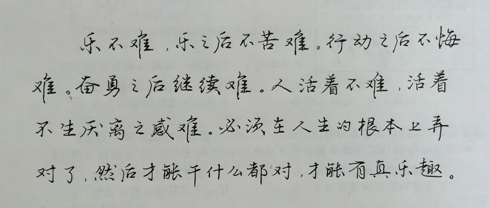
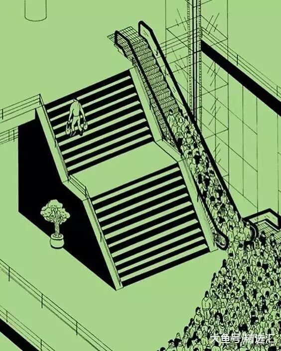
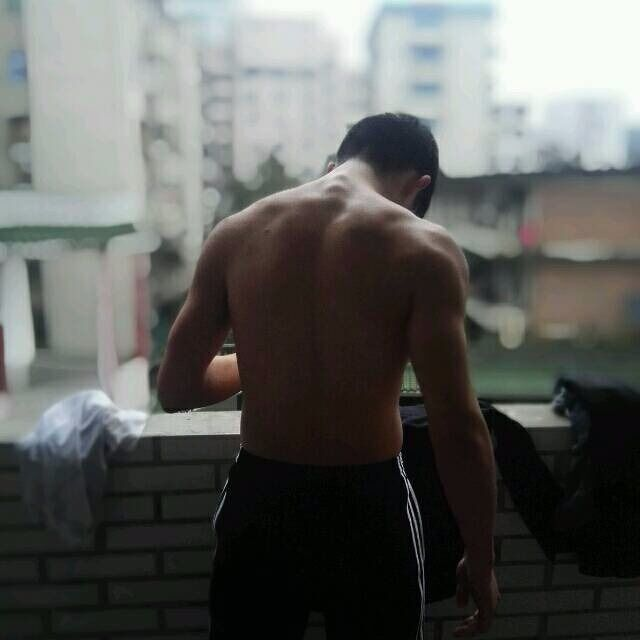
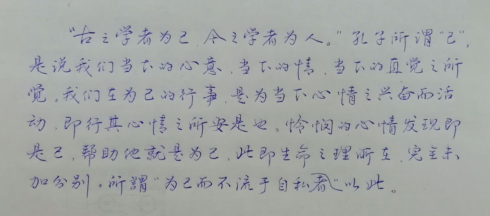
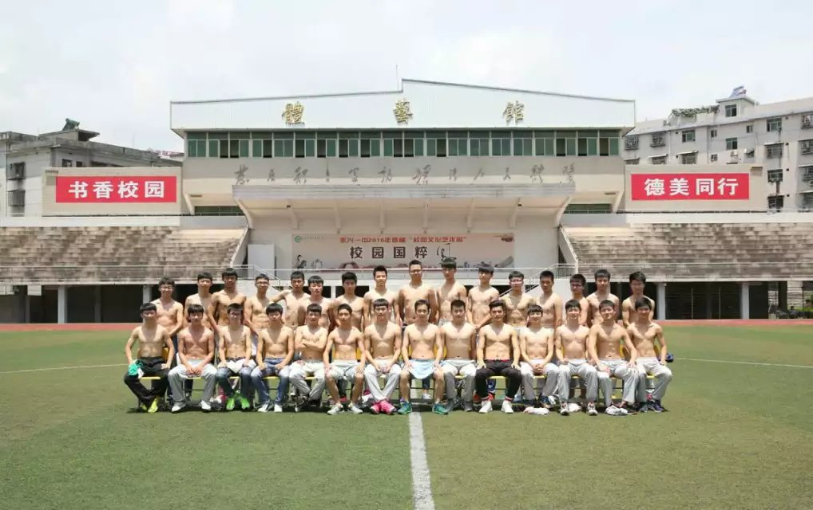
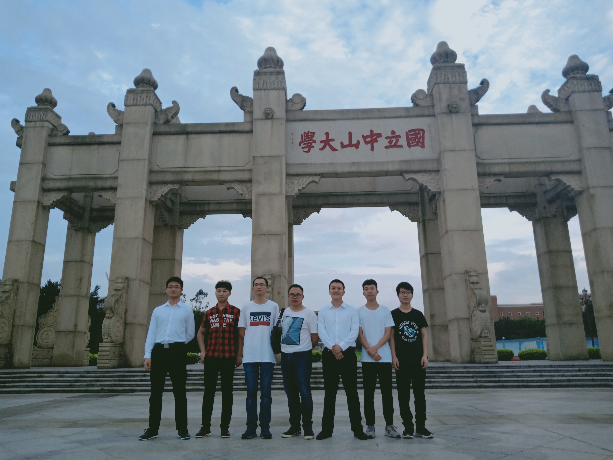
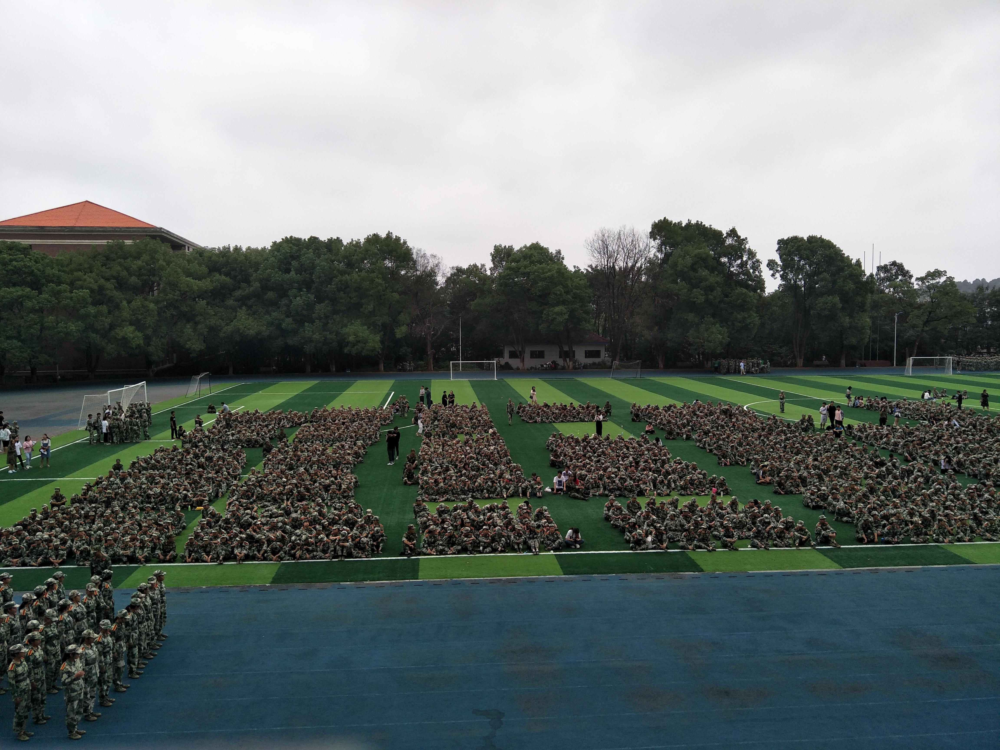

|
俗话说，“物以类聚，人以群分”，可是俗话不俗，大量事实表明这句话真的是有道理的。与虎狼同行，你不会甘愿自己是囚鸟；与江河同行，你不会满足自己是溪流；同样的，与优秀的人在一起，你也不会甘愿自己平凡。
人是一种能够接受外界暗示的生物，有时候充分的暗示能够使自己的行事轨迹完全改变。积极的暗示会使你朝着更好的方向发展，它会是你成功路上的助推剂，它能在很大程度上帮助你认清自己的目标，并且朝着目标勇往直前，直到目标实现。消极的暗示则完全相反，它使你甘于平凡，
使你自甘堕落，最终你会一事无成。
|
|
|  |
清华的一位教授在给群友分享书法时曾写下过左边的那段话，人生要想快乐其实并不难，我们所做过的许多事，
往往都是在做完之后就会后悔，比如说做一个项目答辩的时候，讲完之后才开始后悔‘哎呀，当时我就应该这么来讲’
，想要再来一次，但是这个世界上可是没有后悔药的。
|
|  |
孤独者在引领技术走向，推动社会发展的同时，也要注意民众的“同化”。人的性格中隐约有群体意识，
会理所当然地少数服从多数，孤独者要有舌战群儒的本领，就要有充耳不闻的本事。
很多人本是一个人走，被呼喊几声，便成了芸芸众生的一员。所以孤独者“高处不胜寒”，
少而珍贵，受到世人的敬仰或是不解。 |
|  |
这张图从15年诞生之后便一直跟随着我了，QQ头像，微信头像，
微博头像等等各种需要头像的账号，我都是拿它放上去。 |
|  |
清华一位教授创办的群，他将身边对书法感兴趣的人拉近了一个群，彼此简称书友，
在这个QQ,微信泛滥人们日常几乎不手写的时代，他呼吁我们重新拿起手中的笔，继续传承中华书法，书友有老有少，长辈在这里可以交流经验，晚辈
在这里受益无穷，每天各位书友都会抽空写下一篇字，然后其他书友就会来点评，各抒己见，交流学习共同进步。
|
|  |
高考前的毕业照，每个高中都会有的传统，这是我所在的体训队的毕业照，我们有我们独有的风格。
从一个体育生，到一个文化生，再从一个文化生到一个技术宅，这期间的故事还真不是一言两语就能说清的，我的生活将会被记录在这个页面
没有目的，没有核心，没有主题，因为我觉得这就是生活，生活本该如此，我想我就做，我不想那么就不做，在个人的生活中不需要过多的在意别人的看法
，不需要去揣测别人的心思，我是一个个体，我主宰着我的世界。
|
|  |
这是19年5月份在中山大学的参加一场项目答辩，入围之后的一张合影，当时大二的
我们和一群名校竞争，这些学校的团队许多都有研究生坐镇，但是我们就如一群小老虎，以一种天生我才必有用的心态在这样的一种圈子中杀出了
一条血路，去广州的时候是我刚从北京回来的第三天，或许是见过太多厉害的角色了吧，踏入会场的时候并未怯场，看来眼界决定高度这话没错。
|
|  |
这是大一军训的时候拍的，由于身体原因，我并未参加入学军训，
失去了一次最快融入班级的机会，不能全程陪伴，虽然遗憾，但是也没什么好后悔的，人生就是如此，但愿各位亲爱的同学们都有一个美好的明天吧。
|